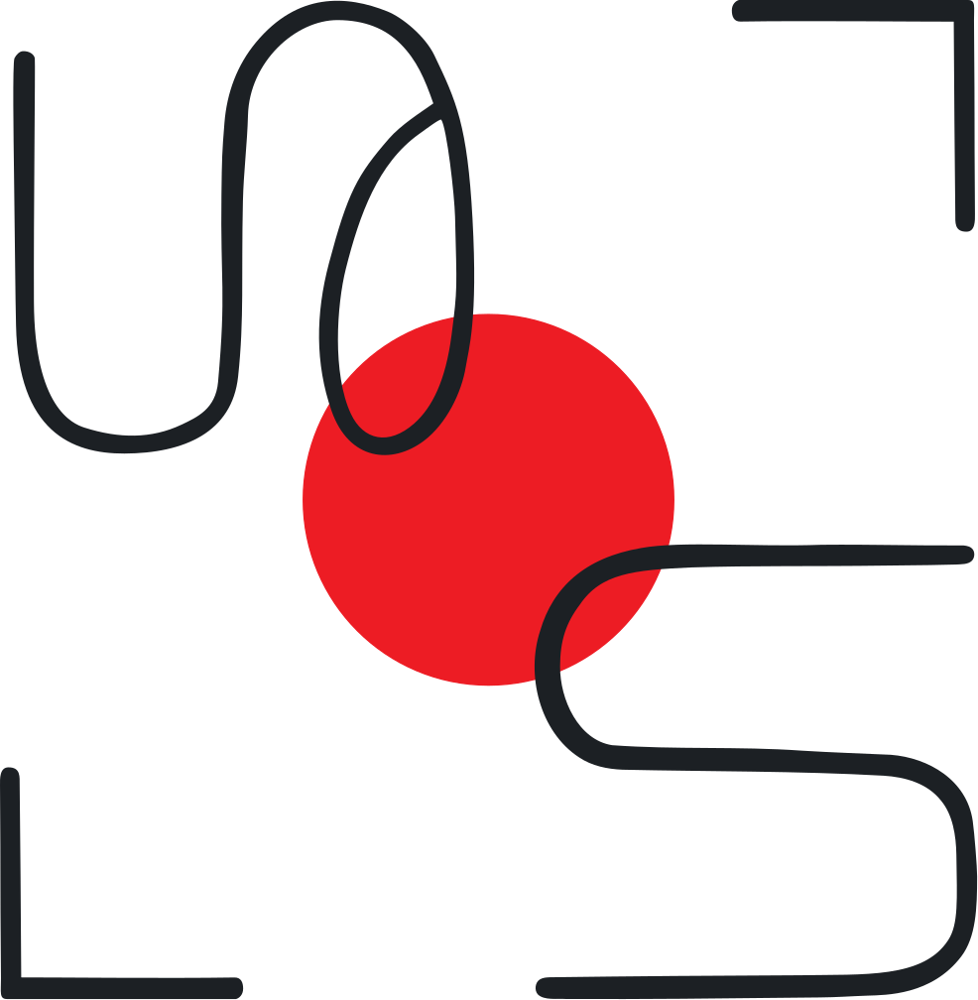
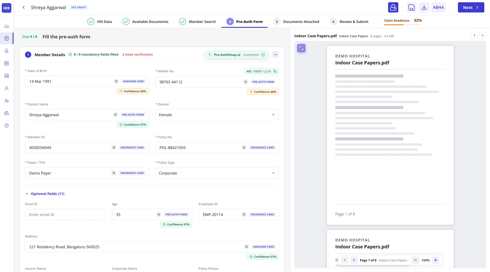
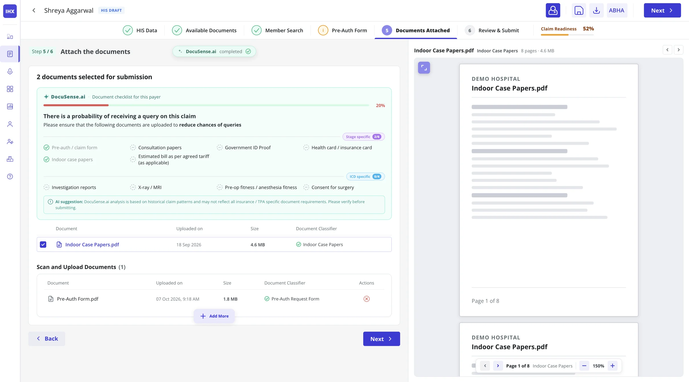
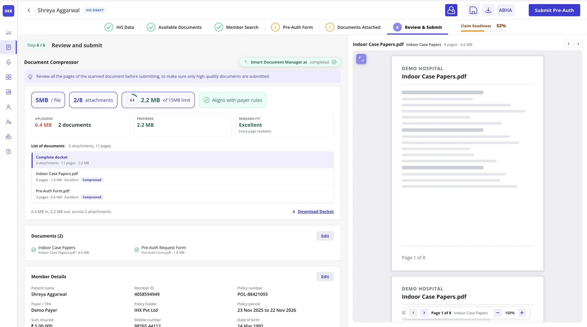

5 → 2 min
Pre-auth claim submission time, with BenefSnap automating beneficiary search and PreAuthSnap filling the form

I design the agentic experience for five AI agents in pre-authorization. Together they form the Intelligent Pre-Auth Flow, the step before IHX MIRA.
A docket or pre-auth form runs PreAuthSnap: it finds the patient and fills the form. An insurance card alone runs BenefSnap for the beneficiary search. Submission drops from 5 to 2 min.
Get the claim right first time: fewer payer queries, faster TAT.
Upload once, submit faster: no outside PDF tools, patient data stays inside IHX.
Solving pre-auth for hospitals was integral to retaining enterprise hospitals and renewing payer contracts.
PreAuthSnap fills the form, the biggest share of pre-auth time, and BenefSnap automates the beneficiary search. Together they cut submission from 5 to 2 min; CodeRight and DocuSense target fewer payer queries and faster TAT.
Fewer queries and faster pre-auths support payer contract renewal.
SettleSense targets revenue per claim from INR 120 to 150, sold as a paid add-on to Auto-Recon.
SDMS keeps patient documents inside IHX instead of outside PDF sites, a selling point under India's data protection law (DPDP).
A concept I pitched. The hospital desk submits a claim by chatting. MIRA asks for the patient, the diagnosis and missing documents, and brings payer questions into the same chat. It needs kiosks and hardware in hospitals, so it is long-term. Every agent above is a part it needs.
IHX MIRA prototype: a claim taken from intimation to submission in one conversation.
Staff retype what is already on their documents: member card, pre-auth form, docket.
An agent at each point of friction, using data already in IHX.
Show where every value came from, how sure the agent is, and what still needs checking. Staff can edit everything.
BenefSnap is live. PreAuthSnap, CodeRight and DocuSense are in pilot at 3 hospitals; SDMS.AI is in development.
The five agents become the Intelligent Pre-Auth Flow, the predecessor to IHX MIRA.
Each step where staff used to type, search or use outside tools now has an agent. The agent reads and fills; staff check and edit.
Designing for AI starts with how people think and what makes them trust a result. So every agent shows where a value came from, how sure it is, and what is missing, and lets staff edit everything.
BenefSnap reads a member or policy card and runs the beneficiary search automatically. It runs when staff upload only a card. A docket or pre-auth form runs PreAuthSnap instead.
Someone matches the beneficiary ID by hand, or the hospital submits by email instead.
They did not want to do beneficiary search by hand at all.
The data is already on the card the hospital uploads, so upload moved earlier in the flow and extraction replaced retyping.
A docket or pre-auth form runs PreAuthSnap. A card alone runs BenefSnap; staff then select the policy and either upload the pre-auth form or fill it manually.
Upload sits where staff already pick the payer, not on a new screen. Nothing new to learn.
The member card sits next to the extracted details: name, policy number, insurer and TPA. Staff can edit any field, and the agent learns from each correction.
Rolled out across the platform as a premium AI feature.
Share of beneficiary searches now run automatically.
Beneficiary searches BenefSnap resolves successfully.
Users who complete the BenefSnap flow once they start it.
Part of the new Intelligent Pre-Auth Flow, the flow that cuts submission from 5 to 2 min. The parent agent: a docket or pre-auth form runs PreAuthSnap. It runs the beneficiary search, staff pick the card, then it fills the pre-auth form for staff to review.

Staff typed pre-auth details by hand, though the signed form they uploaded already had them. Double work, and data-entry errors.
Uploads vary: a docket of up to about 100 pages, a single pre-auth form, or just an insurance card. The system has to identify the input. In a docket, it also has to find the pre-auth form among the other pages. No existing service could recognise a pre-auth form.
Staff upload whatever they have, and the system responds to it. A docket or pre-auth form runs PreAuthSnap: beneficiary search, card selection, then the Member, Treatment and Bill details are filled. The upload carries through to Document Upload, so nothing is uploaded twice.
Each field shows where it came from: KYC, insurance card, pre-auth form or the hospital's HIS.
Payers read the signed pre-auth form, so when sources disagree, its values take priority.
OCR and Gemini both extract each field. Staff see a confidence score, choose the value, and can edit any field.
The form shows how many fields are filled and how many need checking. Skipped or missed steps get an orange alert.
PreAuthSnap fills the form, the biggest share of pre-auth time.
CodeRight reads the diagnosis from the pre-auth form, or from plain words staff type, and suggests ranked ICD-10 codes and the probable treatment. Staff verify.
Desk staff describe conditions in plain words: "cancer of bone" for sarcoma, "stone in kidney". Doctors use shorthand, like "TM perf".
A searchable ICD dropdown only works if you already know the clinical term.
No ICD dropdown. Staff can type in plain words, and the selected department helps narrow it down. In the Intelligent Pre-Auth Flow, CodeRight also reads the pre-auth form, so staff verify instead of typing.
The system suggests up to five ranked codes, and staff pick one. A wrong auto-picked code costs more than a slower right one.
Each suggestion shows how many cases this hospital had with that code in the last three months, and how likely it is to be the right one. The probable treatment is suggested too.
The screen says suggestions may not match every insurer's rules and should be verified.
Diagnosis entries that carry a valid ICD-10 code, up from 39%.
The most relevant ICD code appears in the top 3 results.
DocuSense builds a document checklist for each claim from its diagnosis and procedure, and shows how many mandatory documents are attached.

Payers asked for documents days later, often after discharge, when they were harder to get.
The checklist is built from the claim's ICD code and procedure, using the same mapping as CodeRight. No new input from the hospital.
A bar shows how many mandatory documents are attached, while staff can still add the rest.
Stage-specific and ICD-specific documents are listed separately, so staff see why each one is needed.
The same "based on historical patterns, please verify" line, so AI suggestions read the same way across IHX.
Manual QC cases tied to missing or mismatched documentation.
Document classification accuracy for the dynamic checklist.
Staff upload documents once. IHX compresses, splits or merges them to fit each payer and channel.

Discharge dockets mix summaries and bills, and scan quality varies. Each payer and channel has its own file size and attachment limits. An API may accept a large file; the fallback email may not. Staff used outside tools like iLovePDF to fit them.
IHX packages documents per payer and channel. If a submission falls back from API to email, IHX repacks it for the smaller limit without asking staff.
No patient record goes to an outside compression site. This matters under India's data protection law (DPDP).
Staff never build a payer-specific bundle by hand.
If the standard path fails, the system handles the fallback.
Outside the pre-auth flow. Both read what the payer sent and turn it into the next step.
Payer queries sat 12 to 48 hours. No set categories, staff added teammates to each query chat by hand, and replies were spread across four tools. QueryLens categorizes each query, suggests an owner, and keeps the reply in IHX.
Auto-Recon showed a short payment but not the reason. Recovery teams read two letters per claim to find it. SettleSense gives the reason with evidence, marks it contestable or not, and sends contestable cases to the dispute workflow.
Each agent fixes one point of friction. Together, they are the road to IHX MIRA.
IHX · AI Agents at Points of Human Friction, ongoing
Open to product design roles and contract work.
Download resume